Chaotic Oscillators for Secure Communication
Publications:
Overview
Chaotic oscillators, based on chaos theory, are characterized by non-periodic oscillations and sensitive dependence on initial conditions, often exemplified by circuits like Chua's circuit. Their extreme sensitivity to initial conditions makes them ideal for secure analog communication systems. This project explores experimental implementations of chaotic oscillators using transistors and memristors, and how synchronization enables signal masking and recovery.
Features
- Aperiodic but deterministic
- Sensitive to initial conditions
- Broad frequency spectrum (natural spread spectrum)
- Can be synchronized via capacitive coupling
Memristor-Based Wien-Bridge Oscillator
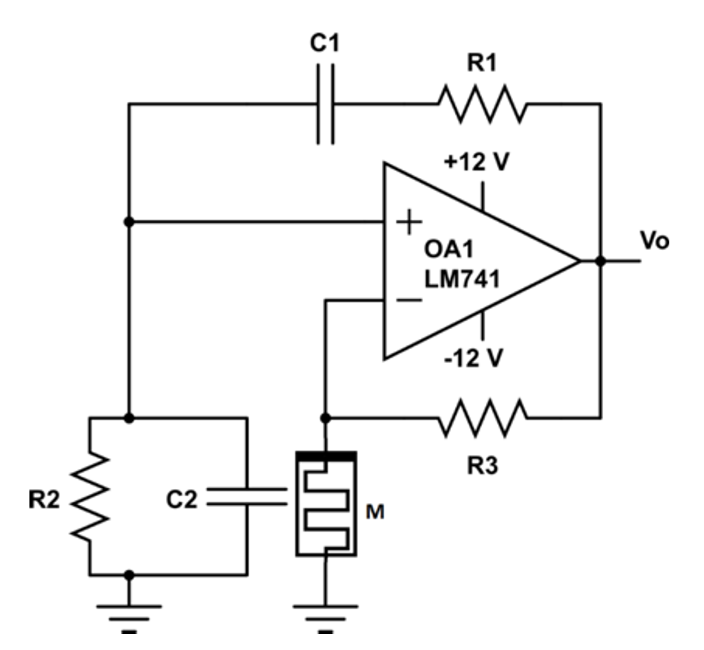
This circuit modifies a Wien-bridge oscillator by replacing a resistor with a memristor emulator to induce chaotic behavior. Manually-tuned values of the components demonstrated a proof-of-concept for chaotic oscillations. The following equations define the frequency and condition of oscillation for this oscillator.
\[ \omega_0^2 = \frac{1}{R_1 R_2 C_1 C_2} - \varepsilon^2 \]
\[ \varepsilon = \frac{(C_1 R_1 + C_2 R_2) R_M(t) - C_1 R_2 R_3}{2 R_1 R_2 C_1 C_2 R_M(t)} \]
\[ R_2 R_3 C_1 > (R_2 C_2 + C_1 R_1) R_M(t) \]
\( R_M(t) \) represents the time-varying resistance of the memristor that will introduce the nonlinearity which is essential for the chaotic behavior.
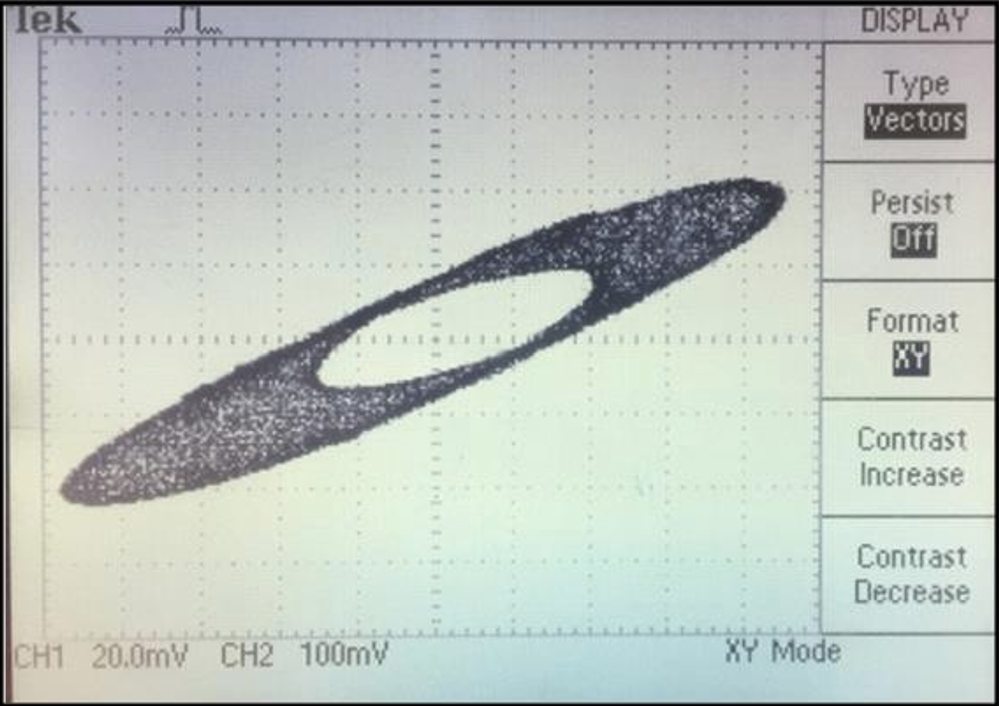
Chaotic Oscillator Based on Two-Transistors
This circuit uses two NPN transistors 2N4401 (Q1 and Q2), along with RC components, to generate chaotic oscillations without requiring any inductors.
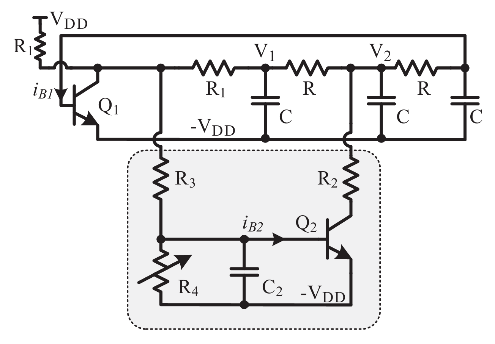
Transistor Q1 operates in a common-emitter configuration. To match the output resistance with the RC ladder's input, resistor R1 is chosen to be half the value of R, effectively creating a balanced load. The transistor is biased using a dedicated subcircuit that introduces a new equilibrium state, enabling sustained oscillations. During the chaotic phase of operation, the variable resistor R4 is tuned to control the base frequency of oscillation.
Dynamical equations (simplified model):
A reduced-order model of the two-transistor chaotic oscillator assumes negligible base currents \((i_{B1}, i_{B2} \approx 0)\), and simplifies the nonlinear dynamics to four coupled first-order differential equations. These equations describe the evolution of voltages \(v_1\), \(v_2\), \(v_{BE1}\), and \(v_{BE2}\) across key components:
\[ RC \frac{dv_1}{dt} = -v_1\left(1 + \frac{R}{2R_1}\right) + v_2 + V_p \frac{R}{2R_1} - i_{C1} \frac{R}{2} \]
\[ RC \frac{dv_2}{dt} = -2v_2 + v_1 + v_{BE1} - i_{C2}R \]
\[ RC \frac{dv_{BE1}}{dt} = -v_{BE1} + v_2 \]
\[ R_3 C_2 \frac{dv_{BE2}}{dt} = -v_{BE2}\left(1 + \frac{R_3}{R_4}\right) + \frac{v_1}{2} + \frac{V_p}{2} - i_{C1} \frac{R_1}{2} \]
These equations capture the oscillator's behavior when operated in the chaotic regime. The circuit's nonlinear feedback and RC dynamics result in complex, aperiodic waveforms.
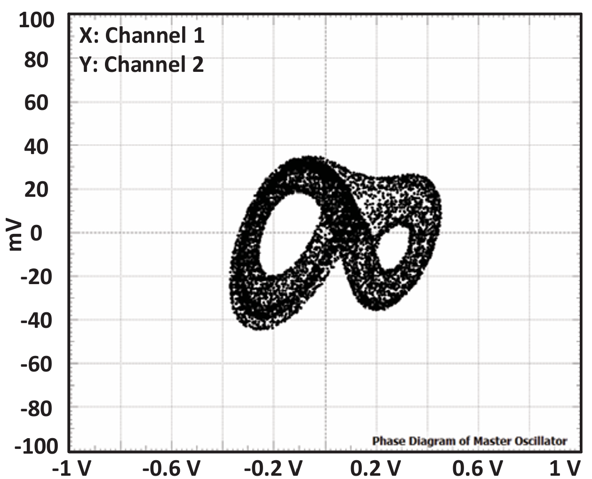
Analog Scrambling with Synchronization Results
To ensure that both chaotic oscillators follow identical dynamics, the transmitter (master) and receiver (slave) are coupled via a capacitor \( C_{\text{Syn}} \). The synchronization occurs by injecting the terminal voltage \( V_{M2} \) from the master oscillator into \( V_{S2} \) of the slave oscillator. The oscilloscope plots below demonstrate successful synchronization in time, frequency, and phase domains.
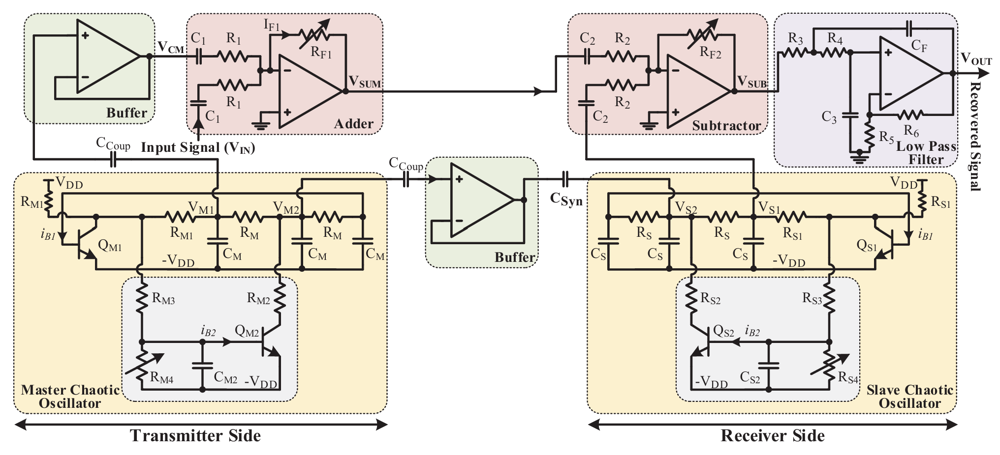
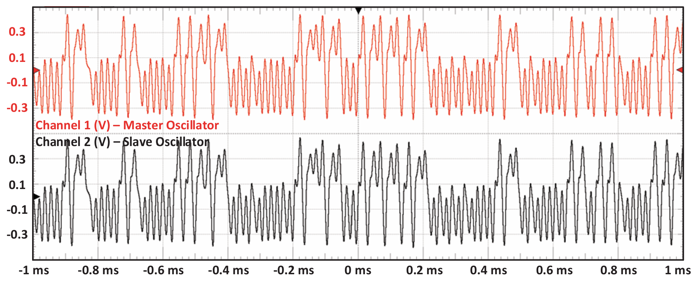
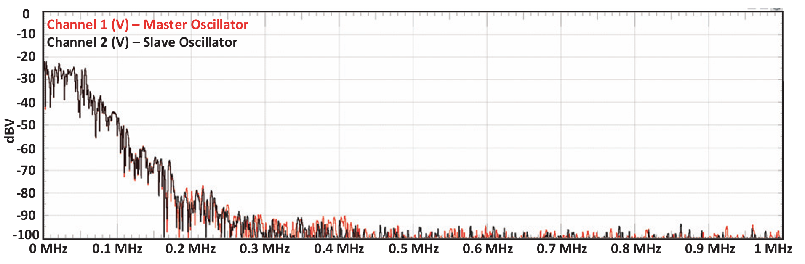
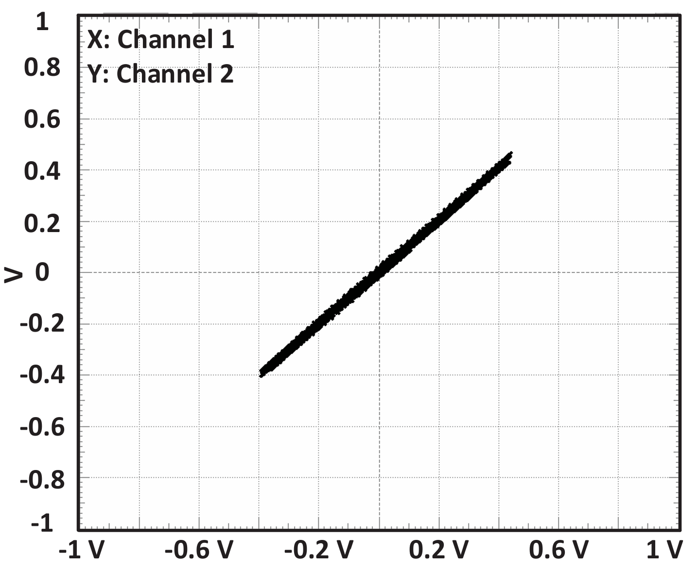
Sound Track Masking & Recovery
In this experiment, an analog audio signal \( V_{\text{IN}} \) is masked by the chaotic output of the master oscillator using a summing amplifier. This results in a composite signal \( V_{\text{SUM}} \), expressed as:
\[ V_{\text{SUM}} = -\frac{R_{F1}}{R_1}(V_{\text{CM}} + V_{\text{IN}}) \]
At the receiver side, the slave oscillator produces a synchronized chaotic signal \( V_{S1} \), which is subtracted from the received \( V_{\text{SUM}} \) using a subtractor circuit:
\[ V_{\text{SUB}} = -\frac{R_{F2}}{R_2}(V_{\text{SUM}} + V_{S1}) \]
By substituting the expression for \( V_{\text{SUM}} \), we get the simplified result:
\[ V_{\text{SUB}} = \left( \frac{R_{F1} R_{F2}}{R_1 R_2} \right) V_{\text{IN}} \]
This means the input signal is effectively recovered if synchronization is maintained and gains are properly tuned. The oscilloscope plots below show the masking and recovery process.
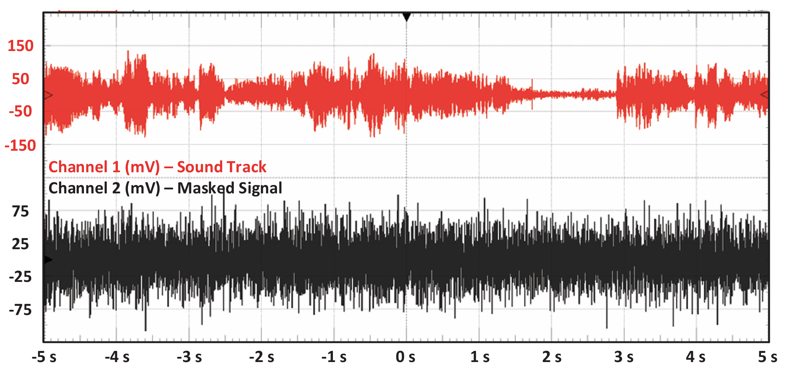
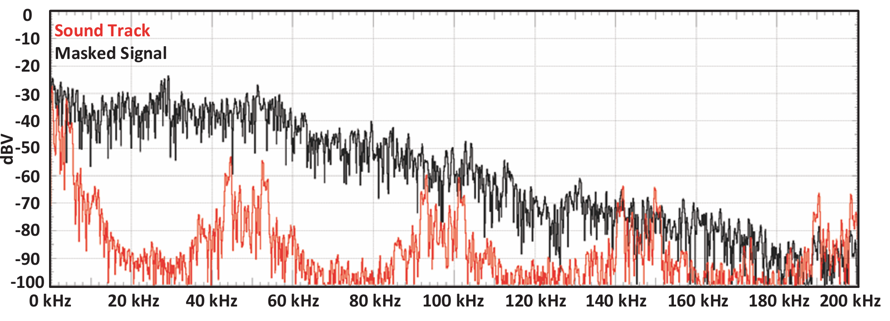
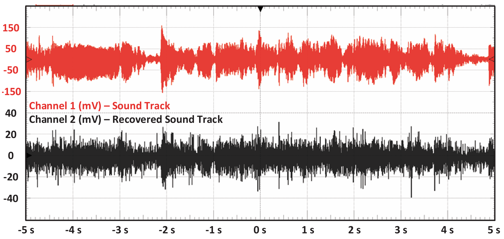